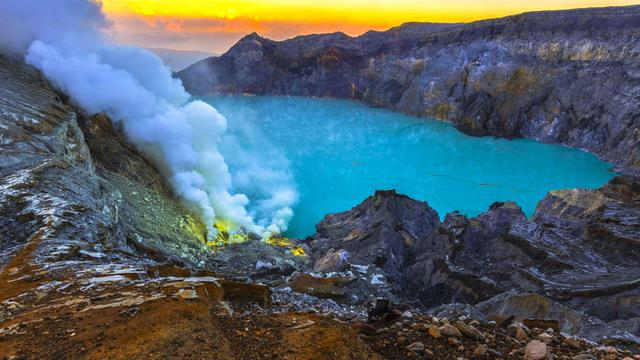
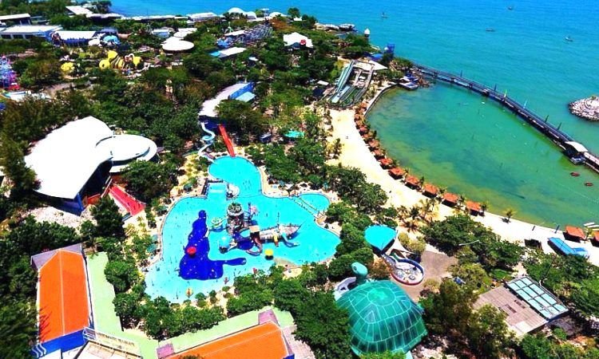
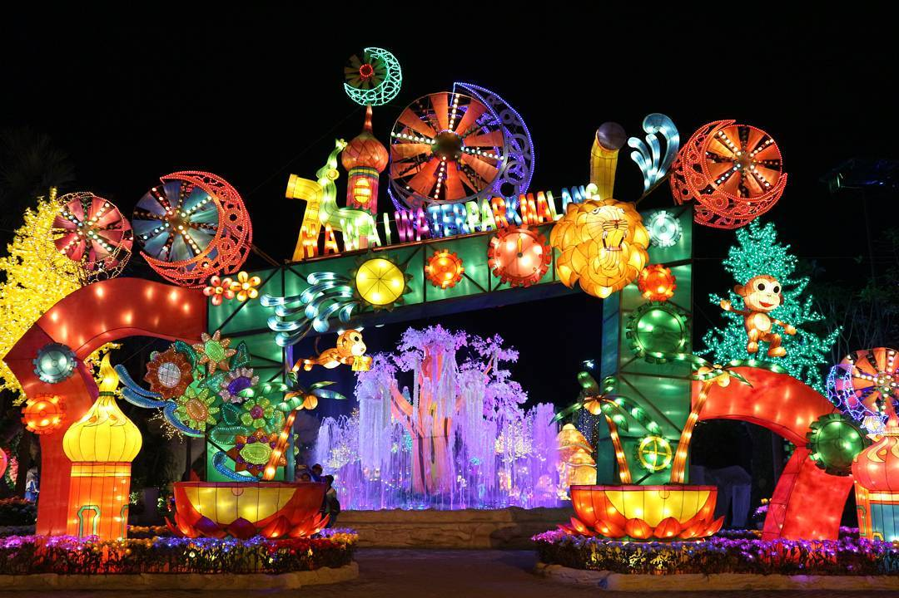
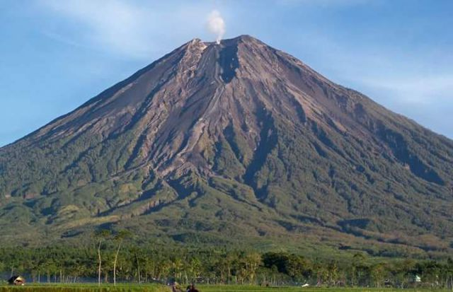

KAWAH IJEN BANYUWANGI
Kawah Ijen termasuk destinasi andalan di Kabupaten Banyuwangi yang menjadi tujuan pariwisata internasional. Tempat wisata Jawa Timur yang sudah buka ini memiliki atraksi langka yang hanya ada dua di dunia yakni Blue Fire atau Blue Flame. Fenomena alam ini bisa Anda nikmati pada ketinggian 2.443 mdpl dari atas kawah sedalam 200 meter pada saat fajar. Ketika langit masih gelap, indahnya api biru yang menyala dapat terlihat dengan jelas. Untuk menuju lokasi Anda harus berjalan kaki hingga ke puncak atau menggunakan gerobak taksi manusia. Waktu terbaik berkunjung berlangsung saat pagi hari mulai pukul 02.00 WIB, sebab Anda bisa menikmati blue fire dan sunrise sekaligus. Langsung saja datang ke Pos Paltuding Kawah Ijen di Jl. Kawah Ijen, Sri Wulung, Tamansari, Licin, Kabupaten Banyuwangi. Dengan tiket masuk antara Rp5.000,00 hingga Rp30.000,00 Anda sudah bisa menikmati tempat wisata hits di Jawa Timur ini.. untuk info selengkap nya cek disini
KAWAH WURUNG BONDOWOSO

Tidak seperti Kawah Sikidang yang mengeluarkan belerang, Kawah Wurung ini justru berselimut padang rumput. Rerumputan ini membuat panorama kawah terlihat seperti bukit teletubbies saat musim subur. Area perbukitannya pun sangat menarik untuk berbagai aktivitas outdoor seperti camping, bersepeda, hingga bermain ATV. Fasilitasnya juga sudah tersedia jadi Anda bisa langsung sewa di tempat. Tidak sedikit pula wisatawan yang menjadikan kawah ini sebagai lokasi prewedding mereka. Cukup siapkan saja budget Rp5.000,00 untuk membayar tiket masuk tempat wisata alam terkenal di Jawa Timur ini. Anda juga bisa datang setiap hari antara pukul 08.00 WIB hingga 16.00 WIB. Lokasinya berada di Daerah Margahayu, Kalianyar, Ijen, Kabupaten Bondowoso. jika ingin mengetahui lebih dalam seperti apa kawah wurung bondowoso cek disini
PANTAI PAPUMA JEMBER

Jember juga memiliki pantai cantik bernama Pantai Papuma yang tidak kalah dari Pantai Jogja yang terkenal. Pantai berpasir putih ini punya panorama laut yang eksotis terutama saat sunset dengan air laut tenang berwarna kebiruan. Selain bersantai, pantai ini juga asyik untuk berbagai aktivitas seperti menaiki perahu, bermain banana boat, hingga mencoba ikan bakarnya. Anda juga bisa menjelajah kawasan Bukit Siti Hinggil atau Goa Jepang yang ada di sekitar pantai. Untuk menikmati pesona pantai ini, Anda harus menyiapkan biaya retribusi sebesar Rp20.000,00 hingga Rp25.000,00. Jam operasional pantai ini sendiri berlangsung antara pukul 08.00 WIB sampai dengan 16.00 WIB. Anda bisa datang langsung ke lokasinya di Jl. Papuma, Curahrejo, Sumberejo, Ambulu, Kabupaten Jember. Dengan segala pesonanya ini wajar jika Pantai Papuma masuk dalam daftar Pantai Terindah di Indonesia dari TripAdvisor pada tahun 2015. disini
WISATA BAHARI LAMOGAN
WBL atau Wisata Bahari Lamongan termasuk salah satu tempat wisata favorit di Jawa Timur. Tempat ini menawarkan berbagai macam wahana permainan seru mulai dari wahana rekreasi hingga wahana air. Kawasan ini bisa dibilang mirip dengan Nusa Dua Bali yang menyediakan fasilitas wisata bahari lengkap. Tempat ini sangat cocok untuk Anda yang ingin rekreasi bersama keluarga. Mulai dari bermain kayak, mencoba permainan seru, hingga belajar berbagai hal bisa Anda lakukan. Tiket masuknya juga masih terjangkau mulai Rp40.000,00 hingga Rp130.000,00 yang sudah sekaligus tiket beberapa wahana. Kawasan wisata ini berlokasi di Jl. Raya Paciran, Tunggul, Paciran, Kabupaten Lamongan. Anda bisa berkunjung ke taman bahari ini setiap hari mulai pukul 08.30 hingga 16.30 WIB. info lebih lengkap cek disini
MALANG NIGHT PARADISE
Kota Malang memiliki banyak destinasi menarik dan satu yang cukup populer adalah Malang Night Paradise. Tempat wisata hits di Malang satu ini menawarkan wisata malam yang seru untuk rekreasi Anda bersama keluarga. Ada banyak wahana permainan seru seperti pasar malam lengkap dengan lampu-lampu hias cantik. Pengunjung yang datang bisa puas berfoto dan mencoba wahana yang ada. Tiket masuknya pun tidak terlalu mahal sekitar Rp55.000,00 hingga Rp145.000,00 untuk tiket terusan. Jadi wajar jika tempat ini selalu menjadi destinasi dari banyak paket liburan murah ke Malang. Anda bisa langsung mengunjungi lokasinya di Jl. Graha Kencana Raya, Karanglo, Balearjosari, Blimbing, Kota Malang. Tempat wisata Jawa Timur ini buka pada pukul 17.45 WIB hingga 22.00 WIB, namun Anda tetap bisa datang lebih awal sebab siang harinya tempat ini menjadi Hawai Waterpark. untuk info selengkap nya cek disini
GUNUNG SEMERU LUMAJANG
Gunung Semeru merupakan gunung tertinggi di Jawa yang selalu menjadi incaran para pendaki lokal maupun mancanegara. Salah satu daya tarik gunung dengan tinggi 3676 mdpl ini adalah keindahan bentang alamnya. Di jalur pendakian gunung ini, Anda bisa melihat banyak landscape yang begitu instagramable. Misalnya saja jembatan merah tengah hutan, ranu kumbolo, atau padang savana yang sangat menawan. Gunung ini juga menjadi gunung suci bagi warga sekitar sehingga ada beberapa pantangan yang harus Anda patuhi saat mendaki. Untuk pendakiannya sendiri, Anda perlu menyiapkan retribusi sebesar Rp19.000,00 hingga Rp24.000,00 per orang. Loket pendaftaran pendaki ini buka setiap hari mulai pukul 08.00 WIB hingga 16.00 WIB. Jika Anda tertarik bisa datang ke alamat basecampnya di Jl. Ranupani, Ranupane Satu, Ranupani, Senduro, Kabupaten Lumajang. untuk info selengkapnya cek disini